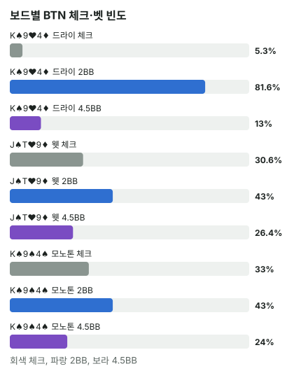

안녕하세요. E26에서 솔버 표를 "전체 빈도 → 사이즈 → 핸드별" 순서로 읽었죠. 오늘은 조건은 그대로 두고 보드 모양만 바꿔 볼 거예요.
같은 BTN, 같은 레인지인데 보드가 바뀌면 c-bet이 확 달라져요. "K 하이 드라이니까 작게", "이어진 보드니까 크게" 같은 말을 들어 봤다면, 오늘은 그 말이 왜 나오는지를 솔버 숫자와 레인지 구성으로 따져 봐요.
이 글에서 배울 것
- 드라이·웻·모노톤이 무엇이고, 보드를 보자마자 무늬·연결·높이 세 가지를 세는 법
- 보드가 바뀌면 두 레인지 중 누가 더 많이 맞고, 누가 더 세게 맞는지가 바뀌는 이유
- 그 차이가 BTN의 체크 비율과 사이즈로 나타나는 원리
오늘의 조건
E26과 같아요. 헤즈업 100BB·빅앤티, BTN 2.5BB 오픈 → BB 콜, 플랍 팟 6BB예요. 숫자는 모두 BB가 체크한 뒤 BTN 차례라는 한 지점(노드)의 값이에요. 이때 BTN의 벳이 c-bet(프리플랍에 레이즈한 쪽이 플랍에서 이어서 하는 벳)이에요.
레인지를 한 번 더 떠올리기
프리플랍 레인지는 헤즈업 프리플랍 솔버의 빈도 그대로예요. 예를 들어 레인지에 "QTs:0.02"라고 적혀 있으면 QTs를 2%만 그 행동으로 한다는 뜻이에요.
- BB 콜 레인지: BB는 44 이상 포켓페어 전부, 수트 A 전부, KQ·KJ 같은 핸드를 3벳으로 보내요. 그래서 콜 레인지의 포켓페어는 33·22뿐이고, A는 A5o~A2o뿐이에요. 대신 Q·J·T가 들어간 수트 핸드, 중간·낮은 커넥터가 많이 남아 있어요
- BTN 오픈 레인지: AA·KK·QQ와 높은 카드 핸드가 많아요. 이 모델에서는 JJ·KQs·AJs를 림프하고 AKo도 일부만 오픈해요
오늘 이야기는 전부 이 차이에서 나와요. BTN은 높은 카드와 높은 페어, BB는 수트와 이어진 중간·낮은 카드예요.
결론부터 말하면, 이 조건에서 BTN은 높은 카드 드라이 보드에서 작은 벳으로 거의 다 벳하고, 웻·모노톤에서는 체크를 30% 넘게 섞고 큰 벳 비중을 늘려요.
1단계. 텍스처란 무엇인가
텍스처 = 보드 카드가 서로 얼마나 이어지고, 무늬가 얼마나 겹치는지예요. 텍스처 이름에는 안 들어가지만, 보드가 얼마나 높은 카드인지도 함께 봐야 해요.
- 드라이: 숫자가 떨어져 있고 무늬도 다른 보드. 예: K♠ 9♥ 4♦
- 웻: 숫자가 이어져 스트레이트나 그 드로우가 생기기 쉬운 보드. 예: J♠ T♥ 9♦
- 모노톤: 세 장이 모두 같은 무늬인 보드. 예: K♠ 9♠ 4♠
비유하면 시험 과목이에요. 같은 두 반이 시험을 봐도, 수학이면 A반이 상위권을 쓸고 미술이면 B반이 앞설 수 있어요. 보드가 과목이고, 두 사람의 레인지가 두 반이에요.
보드를 보자마자 세는 세 가지
- 무늬: 같은 무늬가 3장이면 이미 플러시가 가능해요. 2장(투톤)이면 드로우만 생겨요
- 연결: 세 장이 다섯 칸 안에 있으면(J T 9처럼) 이미 스트레이트가 가능해요. A는 맨 위(A K Q J T)와 맨 아래(5 4 3 2 A) 둘 다 될 수 있어요
- 높이: A·K 같은 높은 카드가 있는지, 9 이하 중간·낮은 카드뿐인지
세 번째가 빠지기 쉬워요. 그런데 오늘 두 레인지는 높은 카드를 누가 가졌나에서 가장 크게 갈려서, 높이가 무늬·연결만큼 중요해요. 같은 '드라이'라도 K 하이 보드와 J 하이 보드는 표가 꽤 달라요(뒤에서 봐요).
2단계. 세 보드의 솔버 표
| 보드 | 체크 | 2BB | 4.5BB | 벳 합계 |
|---|---|---|---|---|
| K♠ 9♥ 4♦ (드라이) | 약 5.3% | 약 81.6% | 약 13% | 약 94.6% |
| J♠ T♥ 9♦ (웻) | 약 30.6% | 약 43% | 약 26.4% | 약 69.4% |
| K♠ 9♠ 4♠ (모노톤) | 약 33% | 약 43% | 약 24% | 약 67% |
2BB는 팟의 약 33.3%, 4.5BB는 팟의 75%예요. 올인 벳은 빈도가 없어 뺐어요.

드라이에서는 거의 다 벳하고, 그것도 작은 벳에 몰려요. 웻·모노톤에서는 체크가 크게 늘고 큰 벳 비중도 커져요. 이제 "왜"를 레인지 구성으로 따져 봐요.
3단계. 누가 더 많이, 누가 더 세게 맞나
블로그에서 직접 두 빈도 레인지를 각 보드에 놓고 세어 봤어요(콤보마다 빈도만큼 셌어요).
| 보드 · 기준 | BB 콜 레인지 | BTN 오픈 레인지 |
|---|---|---|
| 드라이 · 페어 이상 | 약 37.7% | 약 41.7% |
| 드라이 · 투페어 이상 | 약 2.5% | 약 3.5% |
| 드라이 · 셋 이상 | 0% | 약 1.1% |
| 웻 · 페어 이상 | 약 38.6% | 약 46.4% |
| 웻 · 투페어 이상 | 약 8.2% | 약 8.1% |
| 웻 · 스트레이트 이상 | 약 4.4% | 약 4.1% |
| 모노톤 · 페어 이상 | 약 42.4% | 약 45% |
| 모노톤 · 플러시 이상 | 약 4.7% | 약 3.3% |
드라이: 센 핸드는 BTN에만
K♠ 9♥ 4♦에서 BB는 셋이 0%예요. KK·99·44는 전부 3벳으로 갔으니까요. 투페어도 BTN이 조금 많아요. BB가 BTN 벳에 크게 반격할 핸드가 거의 없는 보드예요.
웻: 개수는 비슷해도 질이 달라요
J♠ T♥ 9♦에서 스트레이트 이상은 BB 약 4.4%, BTN 약 4.1%로 개수는 거의 같아요. BB에는 J T 9의 위아래를 채우는 Q8(Q 하이 스트레이트)·87(J 하이 스트레이트)이 그대로 남아 있거든요.
하지만 넛 스트레이트 KQ(K 하이)와 셋(TT·99)은 BTN에만 있어요. BB에는 포켓페어가 33·22뿐이니까요. 투페어는 BB에 JT·J9·T9가 많아서 비슷해요.
모노톤: 개수는 BB, 꼭대기는 BTN
K♠ 9♠ 4♠에서 플러시 이상은 BB 약 4.7%, BTN 약 3.3%로 BB가 더 많아요. BB의 Q·J·T 수트 핸드와 낮은 수트 커넥터가 스페이드 두 장일 때 플러시가 되거든요. (K♠가 보드에 있어서 BB의 K 수트 핸드는 스페이드 플러시가 될 수 없어요.)
그런데 BB 레인지에는 수트 A가 하나도 없어요. 그래서 BB의 플러시는 가장 높아야 Q 하이이고, A 하이 넛 플러시는 전부 BTN 쪽이에요. A♠ 한 장을 든 넛 플러시 드로우도 BTN 쪽에 더 많아요.
이게 무슨 뜻이냐면, 강한 핸드를 볼 때는 개수와 꼭대기가 누구 것인지를 따로 봐야 한다는 거예요. 이 차이는 다음 글 E05에서 개념으로 정리해요.
4단계. 핸드별로 보면
핸드별 값은 그 핸드 클래스(예: KQo 전체 콤보)의 평균이라, 콤보마다 행동이 갈린 것일 수도 있어요.
드라이 K♠ 9♥ 4♦: 거의 다 작게
| BTN 핸드 | 체크 | 2BB | 4.5BB |
|---|---|---|---|
| AA | 0% | 71% | 29% |
| KQo(탑페어) | 0% | 83% | 16% |
| 16% | 84% | 0% | |
| TT | 0% | 100% | 0% |
| 88 | 40% | 60% | 0% |
| A5s(맞은 게 없음) | 8% | 81% | 10% |
탑페어 KQo도, 맞은 게 없는 A5s도 같은 2BB예요. 9와 4 사이의 88만 체크를 꽤 섞어요.
웻 J♠ T♥ 9♦: 위아래로 갈라져요
| BTN 핸드 | 체크 | 2BB | 4.5BB |
|---|---|---|---|
| 87s(가장 낮은 스트레이트) | 0% | 15% | 85% |
| KK(오버페어) | 0% | 31% | 69% |
| 99(셋) | 7% | 43% | 50% |
| KQo(넛 스트레이트) | 2% | 50% | 48% |
| Q2o(오픈엔드 드로우) | 24% | 37% | 39% |
| K9o(바텀 페어) | 62% | 29% | 9% |
| A5s | 72% | 22% | 6% |
| AKo | 100% | 0% | 0% |
- 87s·KK: 87s는 이 보드에서 가장 낮은 J 하이 스트레이트라 BB의 Q8에 지고 있고, KK는 오버페어예요. 둘 다 BB 레인지 대부분은 이기지만, 87s는 더 높은 스트레이트에, KK는 스트레이트·투페어에 다음 카드로 쉽게 밀려서 큰 벳 쪽이에요
- Q2o: Q는 J T 9와 이어져 K나 8이 오면 스트레이트가 돼요. 이런 드로우도 큰 벳을 꽤 섞어요
- K9o·A5s·AKo: 약한 페어이거나 맞은 게 없는 핸드는 체크가 많아요. AKo는 Q가 오면 넛 스트레이트가 되는 거트샷(한 가지 숫자만 기다리는 스트레이트 드로우)이 있지만 전부 체크해요
- KQo: 넛 스트레이트인데 두 사이즈를 반씩 나눠요. 클래스 평균이라 콤보별로 갈렸을 수도 있고, 같은 콤보가 섞었다면 두 사이즈의 가치가 비슷하다는 뜻(E26)이에요
큰 벳에 센 핸드(87s·KK·99)와 드로우(Q2o)가 함께 들어가고, 중간·약한 핸드는 체크로 빠지는 모양이에요. 이렇게 벳 레인지가 센 쪽과 블러프·드로우 쪽으로 나뉘는 것을 폴라라이즈라고 해요(E09에서 다뤄요).
모노톤 K♠ 9♠ 4♠: 위쪽 페어는 크게, 중간 페어는 쉬어요
| BTN 핸드 | 체크 | 2BB | 4.5BB |
|---|---|---|---|
| AA | 0% | 3% | 97% |
| AKs | 12% | 9% | 79% |
| KQo | 10% | 29% | 61% |
| 51% | 49% | 0% | |
| 88 | 78% | 22% | 0% |
| T9o | 57% | 43% | 0% |
AA에는 A♠가 든 콤보(넛 플러시 드로우)와 아닌 콤보가 섞여 있어요. AKs는 K♠가 보드에 있어 스페이드가 없는 탑페어예요.
이게 무슨 뜻이냐면, 플러시가 많은 BB도 레인지 대부분은 아직 플러시가 아니고, 스페이드 한 장을 든 드로우도 섞여 있다는 거예요. 그래서 BTN의 탑페어·오버페어는 다음 스페이드가 오기 전에 크게 값을 받으려 하고, QQ·88처럼 애매한 페어는 체크로 쉬어요.
왜 그럴까: 보드는 "얼마나 많이"와 "얼마나 세게"를 바꿔요
드라이에서는 왜 "작게" 칠까
드라이 K♠ 9♥ 4♦에서 BB 레인지는 약하고, 드로우도 거의 없어요. 큰 벳으로 지켜야 할 것이 적은 보드예요. 다음 카드에 뒤집힐 위험이 작으니까요.
그리고 작은 벳 하나로도 할 일은 다 돼요. BB의 맞은 게 없는 핸드는 2BB에도 접히고, 약한 페어는 2BB면 콜해 줘요. 그래서 BTN은 싼 값으로 레인지 거의 전체를 벳해요.
웻·모노톤에서는 왜 사이즈가 커질까
웻·모노톤에서는 BTN의 센 핸드도 다음 카드에 쉽게 밀려요. 87s는 Q 한 장에, 모노톤의 탑페어는 스페이드 한 장에 밀리죠. 이런 핸드는 드로우에게 비싼 값을 물려야 해요.
그리고 BB에도 센 핸드가 있으니, BTN의 약한 핸드가 벳하면 레이즈를 맞기 쉬워요. 그래서 약한·중간 핸드는 체크로 빠져요. 남은 벳 레인지의 모양은 두 보드가 조금 달라요.
- 웻: 센 핸드와 Q2o 같은 드로우가 함께 남아 폴라라이즈돼요. 센 핸드는 크게 받고, 드로우는 크게 접게 하려 하니 큰 사이즈가 어울려요
- 모노톤: 크게 치는 건 AA·AKs·KQo 같은 위쪽 원 페어예요. 다음 스페이드 한 장에 밀리기 전에 값을 받고 드로우에게 비싼 값을 물리는, 보호와 밸류의 큰 벳이에요
한 판으로 따라가 보기
Hero가 BTN에서 A5s를 들었다고 해 볼게요.
K♠ 9♥ 4♦라면 BB에 셋이 없고, 2BB 벳 한 번으로 BB의 맞은 게 없는 핸드를 접게 할 수 있어요. 솔버도 이 핸드로 2BB를 81% 써요.
J♠ T♥ 9♦라면 BB에 Q8·87 스트레이트, JT·J9 투페어가 BTN만큼 있어요. 벳했다가 레이즈를 맞으면 A5s는 그대로 접어야 해요. 솔버는 이 보드에서 A5s를 72% 체크해요.
자주 하는 실수
실수 1. "웻 보드는 무조건 크게" 큰 벳이 늘어난 건 맞지만, 웻 보드에서 BTN은 체크도 약 30.6%로 크게 늘었어요. 큰 벳은 87s·KK처럼 지키고 싶은 센 핸드와 Q2o 같은 드로우가 쓰고, 약한 핸드는 쉬어요. 대신 내 핸드가 센 쪽·드로우·애매한 쪽 중 어디인지부터 나눠요.
실수 2. 내 핸드만 보고 c-bet 정하기 "A 하이니까 블러프 c-bet" 하고 모든 보드에서 똑같이 치는 거예요. 같은 A5s가 드라이에서는 2BB를 81%, 웻에서는 체크를 72% 했어요. 대신 보드가 두 레인지 중 누구 편인지부터 봐요.
실수 3. 강한 핸드를 개수로만 세기 "모노톤에서 플러시는 BB가 더 많으니 BTN은 약하다"고 보는 거예요. 개수는 BB가 많지만 A 하이 넛 플러시와 넛 드로우는 BTN에만 있었고, BTN은 AA로 크게 벳했어요. 대신 몇 개인지와 함께 가장 센 핸드가 누구 것인지를 봐요.
"체크한 BTN 핸드는 포기한 건가요?"
좋은 질문이에요. 아니에요. 모노톤에서 QQ·88은 체크가 절반을 넘었지만, 예를 들어 QQ는 BB의 9 페어·4 페어와 맞은 게 없는 핸드를 여전히 이겨요. 이 핸드들은 벳해서 키우기보다 쇼다운까지 싸게 가는 쪽을 고른 거예요. 체크 레인지에 이런 핸드가 남아 있어야 BB도 마음 놓고 공격하지 못해요(E21에서 다뤄요).
숫자가 뒤집히는 지점
무늬·연결만으로는 정해지지 않아요. 같은 조건에서 A♠ 3♥ 2♦는 세 장이 다섯 칸 안인데도 BTN 체크가 약 7.4%뿐이고, J♠ 8♥ 4♦는 무늬도 연결도 없는데 체크가 약 28.6%예요(두 보드는 E06에서 다뤄요). 기준은 BB의 수트·이어진·중간 카드 핸드가 이 보드에 얼마나 맞느냐이고, 높은 카드가 있으면 그만큼 BTN 쪽으로 기울어요.
선생님의 한마디
- 같은 핸드를 다른 보드 세 개에 놓아 보는 연습을 하기 — 오늘의 A5s처럼
- 큰 벳을 하기 전에 "이 핸드는 센 쪽인가, 드로우인가"를 말해 보기
- 숫자는 헤즈업·빅앤티·100BB 조건에서만
연습 문제 (같은 조건, 보드만 바꿈)
문제 1. K♠ 9♠ 4♥(투톤)에서 BTN 전체는 체크 약 14.4%, 2BB 약 67.5%, 4.5BB 약 18.1%예요. 드라이 K♠ 9♥ 4♦와 비교해 핸드별 체크가 이렇게 바뀌었어요: QQ 16% → 36%, 88 40% → 76%, TT 0% → 19%, 그런데 AA는 1%, KQo는 0%. 체크가 늘어난 핸드들의 공통점은 무엇이고, 왜 그럴까요?
정답 보기
벳 합계 = 67.5% + 18.1% = 약 85.6%로 드라이 쪽에 가깝지만, 체크가 늘었어요. 늘어난 건 QQ·TT·88처럼 K 아래 포켓페어, 즉 애매한 중간 핸드예요. AA·KQo 같은 위쪽 페어는 그대로 벳해요. 투톤이 되면 BB에 스페이드 두 장 든 플러시 드로우가 생겨요. 중간 페어로 벳하면 드로우는 쉽게 접지 않고 다음 카드에 무서운 스페이드가 올 수 있으니, 이런 핸드는 팟을 작게 두고 쇼다운으로 가는 쪽이 늘었다고 읽을 수 있어요.
문제 2. 8♠ 6♥ 5♦에서 BTN은 체크 약 41.9%, 2BB 약 28.5%, 4.5BB 약 29.7%예요. 레인지 구성은 페어 이상 BB 약 48.2% · BTN 약 42.8%, 스트레이트 이상 BB 약 4.6% · BTN 약 3.8%예요. 웻 J♠ T♥ 9♦보다 체크가 더 많은 이유를 레인지 구성으로 말해 보세요.
정답 보기
벳 합계 = 28.5% + 29.7% = 약 58.2%로 J♠ T♥ 9♦(약 69.4%)보다 낮고, 체크는 가장 많아요. 숫자를 나란히 놓으면 보여요. 페어 이상이 J♠ T♥ 9♦에서는 BTN 약 46.4% > BB 약 38.6%였는데, 8♠ 6♥ 5♦에서는 BB 약 48.2% > BTN 약 42.8%로 순서가 뒤집혀요. 스트레이트 이상도 BB가 조금 더 많아요. J♠ T♥ 9♦에서 BTN이 지키던 마지막 강점(중간 세기 핸드의 양)까지 BB에게 넘어간 보드라, BTN은 더 많은 핸드를 체크로 돌려요.
사이트의 헤즈업 솔버 조회는 가장 비슷한 대표 보드와 사이트에 들어 있는 레인지로 보여 줘서 숫자가 다를 수 있어요.
핵심 정리
- 텍스처는 무늬·연결·높이 세 가지로 봐요. 이 조건에서는 높이가 무늬·연결만큼 중요해요
- BB 콜 레인지는 수트·이어진 중간·낮은 카드, BTN 오픈 레인지는 높은 카드·높은 페어예요. 보드가 어느 쪽을 살리느냐로 유리한 쪽이 바뀌어요
- 강한 핸드는 개수와 가장 센 핸드가 누구 것인지를 따로 봐요(모노톤: 개수는 BB, 넛 플러시는 BTN)
- 드라이 높은 카드 보드는 지킬 것이 적어 작게 넓게, 웻·모노톤은 약한 핸드가 체크로 빠져 체크가 늘고 사이즈가 커져요(웻은 센 핸드+드로우, 모노톤은 위쪽 원 페어의 보호)
정리하며
오늘은 같은 BTN 레인지로 세 가지 보드의 솔버 표를 나란히 봤어요.
먼저 보드에서 무늬·연결·높이를 세고, 두 레인지가 그 보드에 얼마나 많이·얼마나 세게 맞는지 계산기로 따졌어요. BB 레인지를 살려 주는 보드일수록 BTN은 약한 핸드를 체크로 돌리고, 남은 벳은 크게 쳤죠. 실전에서는 보드를 보자마자 "이 보드는 누구 레인지를 살려 주나"를 한 줄로 말해 보는 것부터 시작하면 돼요.
다음 글 E05에서는 오늘 "개수"와 "꼭대기"로 나눠 본 것을 두 개념으로 정리해요. 레인지 전체의 평균 세기와 가장 강한 핸드의 양이 서로 다른 말이라는 걸 다뤄요.
AI 작성 · 헤즈업 솔버 DB 기준(6맥스 아님) · 빅앤티 · 100BB 싱글레이즈 · 프리플랍 레인지는 헤즈업 프리플랍 솔버 빈도 · 빈도는 DB 요약값(핸드별은 클래스 평균 정수 %) · 레인지 구성은 직접 계산(빈도만큼 셈) · 행동별 EV는 요약에 없음